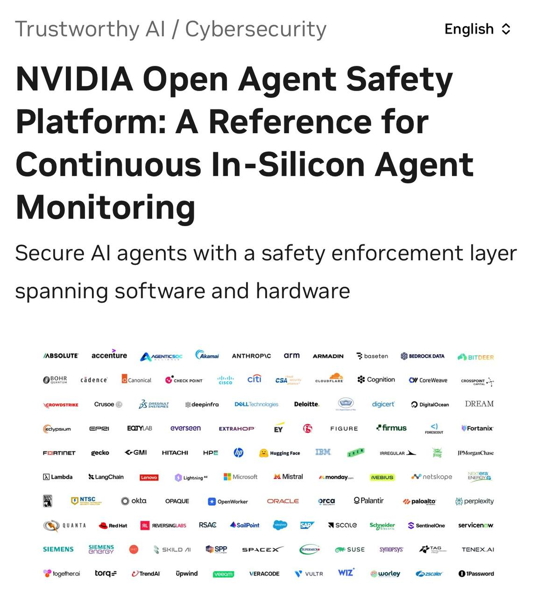
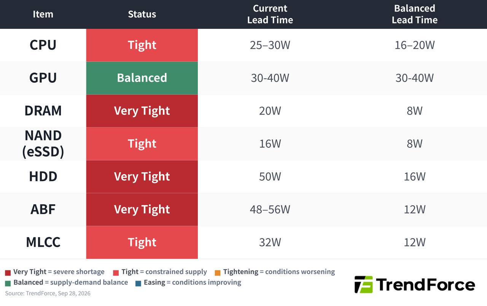

過去 26 小時共 4 則，都是實質內容，沒有業配。有三件事：輝達推出 AI agent 安全平台（OpenShell＋Sentry），附上老黃的評論；TrendForce 的零組件交期表，顯示除了 GPU 以外幾乎全線缺貨；還有一則經濟日報報導，傳台積電要在德州達拉斯建美國第二園區。
原文 #6449
Software：Openshell
Hardware：Nvidia sentry軟體沙盒和硬體切斷來防堵 AI agent 發病
還是老黃最進入狀況，整天在那哭自己產品很可怕會害人，但又一直做下去的企業家則是越看越反感
Today, with over 100 industry partners, we introduced the NVIDIA Open Agent Safety Platform, bringing together OpenShell and Sentry.
Artificial intelligence is extraordinary technology that will advance discovery, productivity, security, health, and prosperity for generations to come.
But its full promise can only be realized when people have confidence that AI is being built to be safe and deployed with wisdom and responsibility.
This is bigger than a single product. It's the beginning of an open ecosystem to build the trust layer for safe agent systems.
Together, we are building the foundation of the AI economy.
Trust and innovation are not in conflict. Safety is how trust is earned. We must build not only the most capable AI, but the most trusted AI, so that this extraordinary technology can realize its enormous promise for the world. nvda.ws/4hcoq7m
原文 #6450（無文字，僅圖片）

圖是 NVIDIA 技術部落格的標題頁：「NVIDIA Open Agent Safety Platform: A Reference for Continuous In-Silicon Agent Monitoring」，副標是用橫跨軟硬體的安全執行層來保護 AI agent。下方是一大片合作夥伴 logo，包括 Anthropic、Arm、Cisco、CrowdStrike、Microsoft、Oracle、Palantir、Palo Alto、SAP、Scale、SpaceX、Zscaler、JPMorgan Chase 等。
講解
AI agent 是能自己執行多步驟任務的 AI，會讀檔、跑程式、呼叫 API。風險在於它手上握有真的權限，一旦碰到被擋住的動作、bug 或指令不清楚，可能會「偏離任務」自己想辦法繞過去。NVIDIA 說，之所以做這個平台，就是因為近期陸續有 agent 逃出測試環境、未經授權存取系統的報告。
這個平台分成兩層。OpenShell 是開源的軟體執行環境（沙盒），讓 agent 以無特權身分執行，限制它能碰到的檔案、網路和程序，在核心層監控並過濾它的系統呼叫，要做的動作得經由單一安全通道送給監督者核准。它支援 Claude Code、Codex、GitHub Copilot CLI 等 agent，也能延伸到 Arm、Intel 平台。Sentry 是硬體層，跑在 BlueField-4 DPU（專門處理網路與資安的資料處理器）上。它是一個「帶外」看門狗，也就是不跟 agent 跑在同一套系統裡，所以 agent 就算把自己那一層搞壞，也關不掉它。在 Vera Rubin POD 的設計裡，BlueField-4 就位在 agent 連到模型的必經路徑上，一發現越界，可以在毫秒內隔離 agent。這正是股癌說的「軟體沙盒＋硬體切斷」。
從投資角度看，這也是在替 BlueField DPU 和整套 Vera Rubin 系統創造新的必買理由：安全被做成硬體功能後，要完整用上就得買 NVIDIA 的架構。有幾點限制要注意：Sentry 只是「參考設計」，需要特定硬體才能用，軟體部分（OpenShell）才是開源、人人可用的；100 多家夥伴多半是「支援／參與」，不代表都已經部署。
後半段「整天在那哭自己產品很可怕…但又一直做下去的企業家」是股癌的個人評論，沒有點名。老黃的英文段落則是官方公關宣言，並不是技術細節。
原文（無文字，僅圖片）

TrendForce 2026/9/28 零組件供需與交期表（W＝週）：CPU 吃緊，交期 25–30W（平衡時 16–20W）；GPU 平衡，30–40W（平衡時也是 30–40W）；DRAM 非常吃緊，20W（平衡時 8W）；NAND（企業級 SSD）吃緊，16W（8W）；HDD 非常吃緊，50W（16W）；ABF 載板非常吃緊，48–56W（12W）；MLCC 吃緊，32W（12W）。
講解
交期（lead time）是從下單到交貨要等多久，是判斷缺貨程度最直接的指標。交期拉長代表供應商有議價權，通常也伴隨漲價。這張表最值得看的是「目前交期÷平衡交期」的倍數：ABF 約 4–5 倍、HDD 約 3 倍、MLCC 近 3 倍、DRAM 2.5 倍，缺得最兇的反而不是 GPU。
各品項簡單說明：ABF 載板是承載高階晶片（GPU、CPU、ASIC）的封裝基板，AI 晶片面積大、層數多，一顆吃掉的產能是一般晶片的好幾倍。MLCC 是積層陶瓷電容，AI 伺服器用量和規格都比一般伺服器高很多；經濟日報 9/29 也報導，被動元件第 4 季的漲價已經從通路擴散到直接客戶。HDD 缺貨是因為雲端業者要存大量資料，而硬碟廠這幾年很保守，沒什麼擴產。DRAM 則是因為產能被 HBM 排擠。GPU 標「平衡」，不代表容易買，而是 30–40 週本來就是它的常態交期。
限制：這張圖只有數字，沒有 TrendForce 的原文說明，我也沒有搜到這張表的原始報告頁面，所以各項數字無法逐一交叉查證。另外「平衡交期」怎麼定義是 TrendForce 自己的口徑。
原文
講解
連結是經濟日報 9/29 的報導〈台積電擴大美國製造版圖 傳赴德州建第二園區 總投資額估超越亞利桑那州〉，股癌只貼連結，沒有評論。報導內容：半導體設備業界傳出，台積電打算在亞利桑那之後啟動美國第二園區，再蓋六座先進晶圓廠，最有可能落腳德州達拉斯；因為製程更先進，總投資估計會超過亞利桑那的 2,650 億美元。報導列出的動機有：美國客戶占營收約 75.64%（2026 上半年）、輝達／蘋果／超微等客戶要求在美生產、川普政府揚言晶片不回美國生產就課到 200% 關稅，以及亞利桑那缺水、缺電、缺工。
要特別注意，這是傳聞，不是公告。報導自己寫明，截稿前沒取得台積電回應，消息來源是「多位不具名供應鏈廠商」私下說聽同業提過，而且「業主並未通知要求預做準備」；地點評估「已進入尾聲，但董事會尚未拍板」。所以六座廠、投資額超過 2,650 億美元這些數字，都是業界推估。對供應鏈來說，報導點名環球晶（在德州有廠）有地利之便；但海外設廠成本高，對毛利率的稀釋也是長期要觀察的變數。